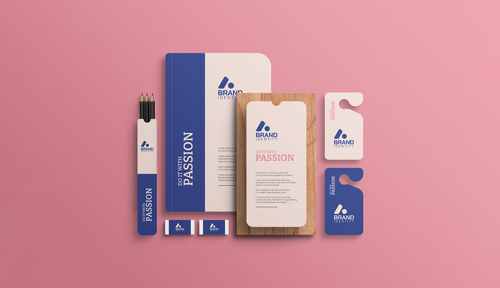
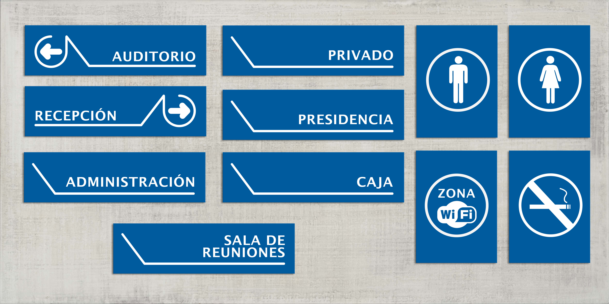
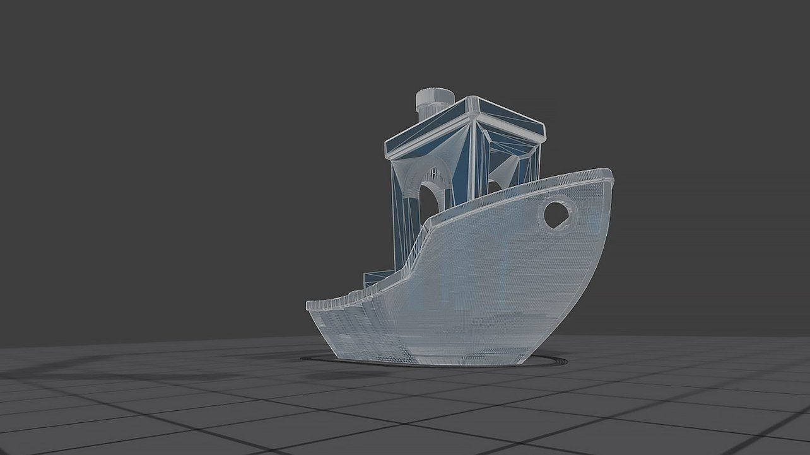
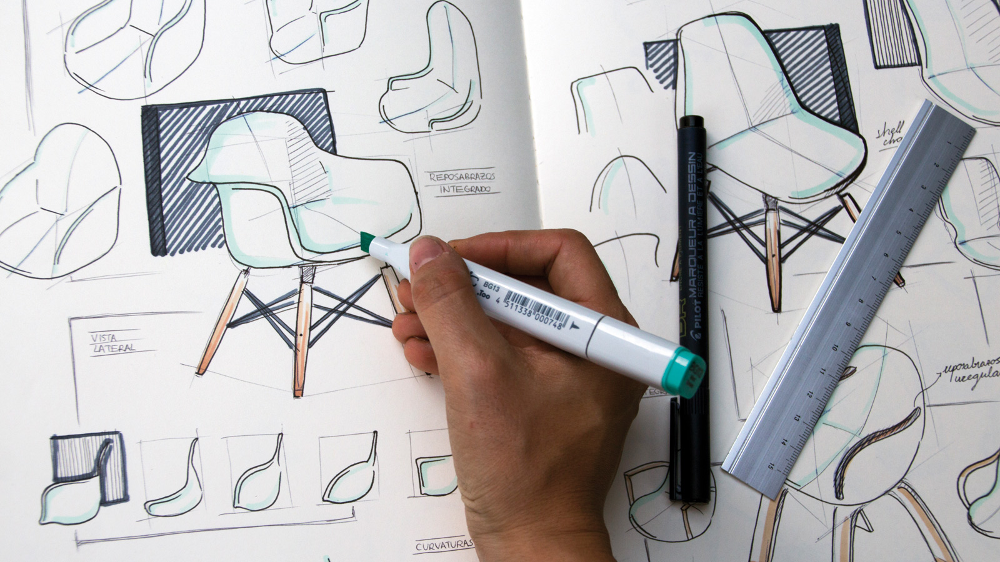

Karla Johanna Campos Aquino
Materias
Diseño Digital V
-
En diseño digital se ve principalmente el uso de programas y sus aplicaciones y usos en el
diseño.
En este ciclo vemos como realizar sitios web, a demás de su diseño, empezando desde el código.

Branding Personal
-
En la materia de Branding Personal buscamos crear una marca que nos represente con la cual
podamos empezar a trabajar media vez nos graduemos, y marca que también nos ayudará en nuestro
portafolio.

Diseño de Señaletica
-
En esta materia buscaremos utilizar el diseño de una manera ilustrativa e informativa para los
demás, indicando los lugares, los peligros y avisos, es decir, toda aquella señal necesaria en una institución
o lugar con una unidad y concordancia del diseño.

Animación y Modelado 3D
-
Veremos como se utiliza el programa de Cinema 4D, enseñandonos todo el potencial que le podemos sacar
creando tambien piezas en la realidad con la impresión 3D.

Innovación Diseño y Desarrollo de Productos
-
Crearemos diseños nuevos, o innovando los usuales productos que solemos ver en nuestro al rededor.
